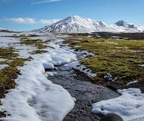

NATURE
Nature is a broad term that refers to the physical world and everything in it that is not made by humans.
It includes living things like plants and animals, as well as non-living things like weather, landforms, and celestial bodies. Scientists study nature to understand how it works and how it affects human life. Nature is also a source of inspiration, beauty, and wonder for many people. üå±üêæüåé
Nature is one of the most important things in our lives. It is because of nature that we are able to exist. Nature is the environment surrounding us and it includes trees, plants, rivers and oceans. Nature not only helps us to survive but it also brings beauty to our surroundings.
There are different ways to classify types of nature, depending on the perspective and criteria. One possible way is to use the four spheres of Earth science: the lithosphere, the hydrosphere, the atmosphere, and the biosphere. These spheres correspond to rocks, water, air, and life respectively, and they interact with each other in complex ways.
Another possible way is to use the natural phenomena that occur in nature, such as weather, geology, astronomy, and biology. Some examples of natural phenomena are sunrise, fog, thunder, tornadoes, volcanoes, earthquakes, stars, planets, and animals.
A third possible way is to use the natural environment, which refers to the living and non-living things that are not substantially altered by human intervention. The natural environment can be divided into different categories, such as forests, oceans, lakes, deserts, mountains, and grasslands.
VARIANTSOF NATURE
Deserts
A desert is a barren landscape with little precipitation making plant and animal life difficult. The lack of vegetation exposes the unprotected surface of the ground to the processes of denudation.
In a valley, a plain is enclosed on two sides but in other cases, a plain may be delineated by a complete or partial ring of hills, mountains, or cliffs. Coastal plains would mostly rise from sea level until they reach mountains or plateaus.
Plains are present on all continents and cover more than one-third of the world’s land area. They may have been formed by flowing lava, depositions by flowing water, ice, wind, or formed by erosion by these agents from hills and mountains.
Taiga
Taiga is a boreal forest or snow forest with pines, spruces, or larches.
The taiga is that type of natural landscape that covers the largest area on earth. In North America, it covers most of inland Canada and Alaska as well as parts of the extreme northern continental United States where it is known as the Northwoods or “North woods”.
In Europe, it covers most of Sweden, Finland, much of Norway, some of the Scottish Highlands, and some low land/coastal areas of Iceland. Much of Russia from Karelia in the west to the Pacific Ocean, and areas of northern Kazakhstan, northern Mongolia, and northern Japan are covered by taiga.
Tundra
Tundra is a natural landscape where tree growth is hindered by low temperatures and short growing seasons. The term tundra is Russian in origin and means “uplands” or a “treeless mountain tract”. There are three types of tundra: Arctic tundra, alpine tundra, and Antarctic tundra.

In the tundra, the vegetation is composed of dwarf shrubs, sedges and grasses, mosses, and lichens. Scattered trees grow in some tundra regions. The boundary region between the tundra and the forest is known as the tree line or timberline.
Mountains
A mountain is a large landform that stretches above the surrounding land in a limited area, usually in the form of a peak. Mountains are formed through tectonic forces or volcanism. These forces can locally raise the surface of the earth. Mountains erode slowly through the action of rivers, weather conditions, and glaciers. A few mountains are isolated summits, but most occur in huge mountain ranges
High elevations on mountains produce colder climates than at sea level. These colder climates strongly affect the ecosystems of mountains: different elevations have different plants and animals
The highest mountain on Earth is Mount Everest in the Himalayas of Asia, whose summit is 8,850 m above mean sea level.
MADE BY FASIHA FIRDOUS